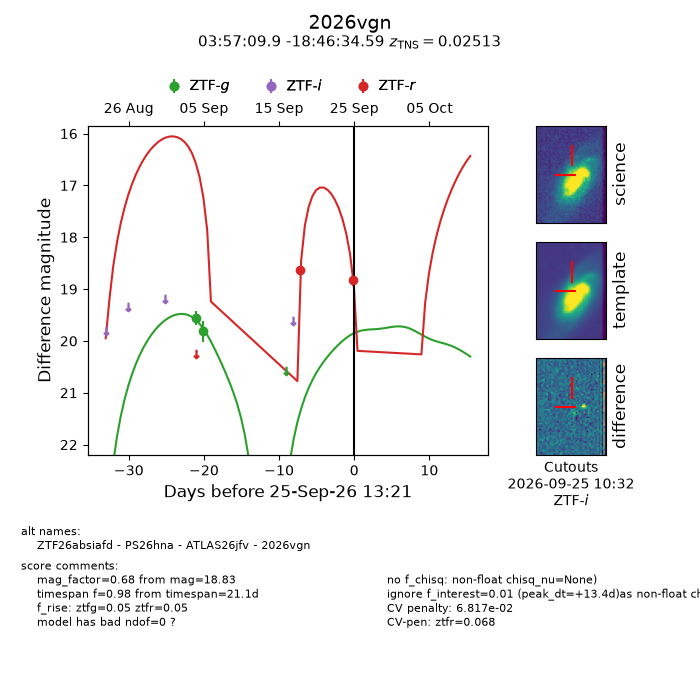
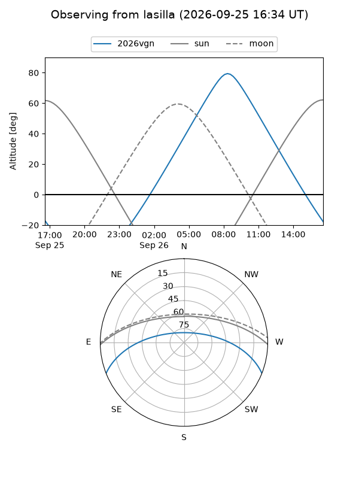
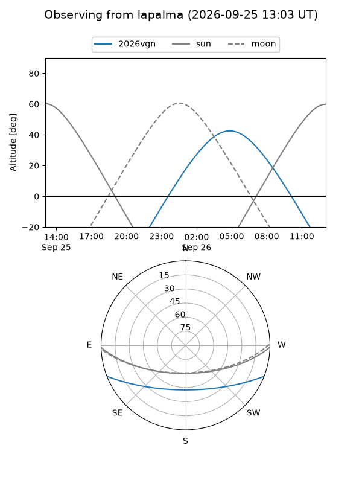
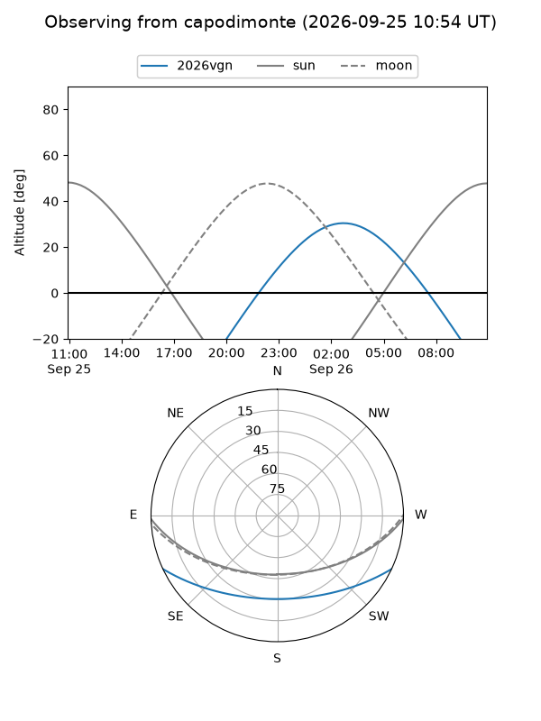
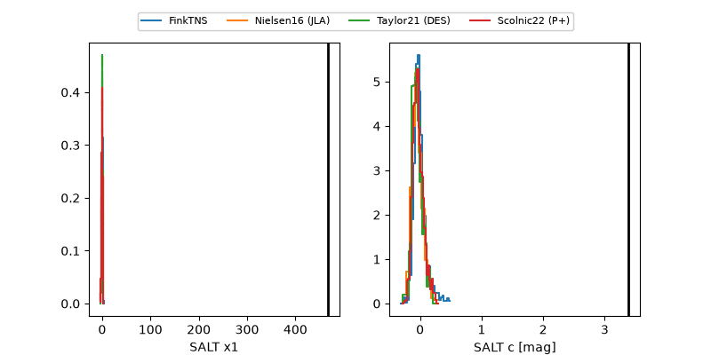

2026vgn
Target 2026vgn at 2026-09-25 13:23
Aliases and brokers:
FINK-ZTF: ztf.fink-portal.org/ZTF26absiafd
Lasair-ZTF: lasair-ztf.lsst.ac.uk/objects/ZTF26absiafd
ALeRCE-ZTF: alerce.online/object/ZTF26absiafd
YSE-PZ: ziggy.ucolick.org/yse/transient_detail/2026vgn
TNS name: wis-tns.org/object/2026vgn
Direct TNS query: direct search
alt names
ZTF26absiafd (ztf,fink_ztf)
2026vgn (tns,yse)
ATLAS26jfv (atlas)
PS26hna (panstarrs)
Coordinates:
equatorial (ra, dec) = 59.2914,-18.77627
equatorial (HMS+DMS) = 03:57:09.92,-18:46:34.59
galactic (l, b) = (212.0063,-46.67893)
Flags:
TNS type: SN II
TNS redshift: 0.0251
peak dt: +13.4
likely cv: !!
Photometry:
last ztfg=19.81, ztfr=18.83
2 ztfg, 2 ztfr detections
Lightcurve

Visibility



Additional plots
